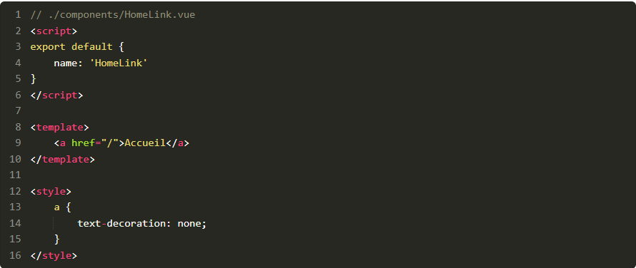

Dans le modèle traditionnel du développement web, lorsqu'un utilisateur clique sur un lien pour aller sur une nouvelle page ou doit mettre à jour le contenu d'une page,
la page entière doit généralement être rechargée.
Cela signifie que même si l'utilisateur ne fait que soumettre un simple formulaire, une nouvelle page est générée pour gérer la réponse.
Cependant, cela pose plusieurs problèmes, car :
Pour les utilisateurs qui paient à la quantité de données consommées, la facture s'alourdit inutilement.
En effet, ils doivent télécharger une page entière pour n'obtenir que de petites mises à jour.
L'expérience utilisateur est ainsi souvent détériorée.
Au début des années 2000, le concept d'applications monopages (Single Page Applications) s'est fait connaître mondialement, avec pour but de résoudre ces problèmes.
Le concept fondamental des SPA est le suivant :
Les utilisateurs ne chargent une page web qu'une seule fois.
Les contenus de la page sont mis à jour de façon distincte plutôt qu'au niveau de la page entière,
ce qui permet à l'utilisateur d'interagir de manière beaucoup plus dynamique.
JavaScript contrôle le lancement de nouvelles pages au sein du même domaine,
cela ne nécessite ainsi plus de rafraîchissement complet de la page.
Cette idée a pu prendre vie au fur et à mesure, car les navigateurs et l'équipement des utilisateurs ont gagné en puissance.
Dans le web moderne, les SPA sont le plus souvent construites grâce à des frameworks frontend.
Découvrez notre framework : Vue
Lorsqu'il s'agit d'apprendre à utiliser un framework frontend, de nombreuses options s'offrent à nous :
React, Angular, Vue, Polymer, et bien d'autres.
Mais pour se lancer, j'aurais tendance à vous conseiller Vue.
En effet, sa courbe d'apprentissage est la plus facile pour tout développeur ayant des compétences basiques en HTML, CSS et JavaScript.
Par conséquent, cela signifie que :
Devenir membre contributeur d'un projet est beaucoup plus accessible.
Les personnes qui ne sont pas expertes en JavaScript peuvent contribuer à un projet avec un minimum d'accompagnement.
Les développeurs peuvent passer plus de temps à être productifs plutôt qu'à apprendre à utiliser un nouvel outil.
De plus, Vue a été conçu dès le départ pour être aussi intuitif que possible pour les développeurs.
Cela signifie que beaucoup de temps et d'efforts sont consacrés à la conception de l'outil, afin qu'une formation minimale suffise pour être efficace, et produire du code.
De plus, sa communauté particulièrement accueillante et une documentation remarquable en font un choix incontournable comme premier framework avec lequel les développeurs devraient travailler.
Ajoutez Vue à votre site
Alors que pour bon nombre de frameworks, vous devrez passer par des outils de build complexes comme webpack, force est de constater que l'ajout d'une instance de Vue.js à votre site est aussi simple que d'intégrer une balise script sur votre page HTML.
Voici une simple page HTML avec le lien CDN (content delivery network) ou RDC, en français (pour réseau de diffusion de contenu) pour Vue.
<.!DOCTYPE html>
<.html lang="fr">
<.head>
<.title>Mon Application Vue.js<./title>
<./head>
<.body>
<.div id="app">
<.h1>Ma première application Vue.js !<./h1>
<.p>J'ai hâte de créer des applications incroyables !<./p>
<./div>
<.script src="https://cdn.jsdelivr.net/npm/vue"><./script>
<./body>
<./html>
Voici comment tester si Vue a été correctement chargé ou non.
<.!DOCTYPE html>
<.html lang="fr">
<.head>
<.title>Mon Application Vue.js<./title>
<./head>
<.body>
<.div id="app">
<.h1>Ma première application Vue.js !<./h1>
<.p>J'ai hâte de créer des applications incroyables !<./p>
<./div>
<.script> // Vue n'est pas encore chargé donc une ReferenceError devrait être retournée
console.log(Vue)
<./script>
<.script src="https://cdn.jsdelivr.net/npm/vue"><./script>
<.script> // La console devrait maintenant afficher une fonction
console.log(Vue)
<./script>
<./body>
<./html>
Si vous ouvrez cette page dans votre navigateur et vérifiez la console JavaScript, vous devriez voir : Dans la console JavaScript
Lorsque cette fonction s'affiche, cela signifie que vous avez bien réussi à charger Vue !
Définissez où Vue devrait apparaître sur votre page
Même si nous sommes parvenus à charger Vue sur notre page, cela ne signifie pas encore que notre site est devenu une application monopage.
Bien que le terme SPA (application monopage ou single-page application) puisse nous faire penser que la page entière est contrôlée par JavaScript,
la plupart des frameworks frontend permettent aux développeurs de contrôler quelle partie de la page est une SPA.
En d'autres termes, vous pouvez décider de quel élément HTML le framework est responsable.
Pour permettre à Vue d'accéder à notre page, nous devons commencer par créer une nouvelle instance de Vue.
<.!DOCTYPE html>
<.html lang="fr">
<.body> <.!-- Contenu temporairement caché pour cet exemple -->
<.script>
const app = new Vue()
<./script>
<./body>
<./html>
Ensuite, nous allons configurer notre instance de Vue en lui transmettant un objet contenant notre première configuration :
l'emplacement de la page sur laquelle Vue est installé.
<.!DOCTYPE html>
<.html lang="fr">
<.head>
<.title>Mon Application Vue.js<./title>
<./head>
<.body>
<.div id="app">
<.h1>Ma première application Vue.js !<./h1>
<.p>J'ai hâte de créer des applications incroyables !<./p>
<./div>
<.script src="https://cdn.jsdelivr.net/npm/vue"><./script>
<.script>
const app = new Vue({
el: '#app'
})
<./script>
<./body>
<./html>
Cet objet de configuration ne possède qu'une seule propriété : « el », qui est l'abréviation d'element.
Il est ensuite suivi d'un sélecteur CSS (c'est-à-dire
#app
,
div
,
.app
).
Utiliser un sélecteur d'ID (c'est-à-dire
#app
) est considéré comme étant une bonne pratique, car votre application devra être reconnue de façon unique sur une page.
Et, bien qu'il puisse accepter n'importe quel type de sélecteur CSS parmi ceux que vous utilisez habituellement, il ne peut pas sélectionner les éléments
<.html>
ni
<.body>
.
Apprenez à stocker des données
Découvrez comment stocker les données
Comme pour toute autre application, nous avons besoin de stocker les données afin de pouvoir les réutiliser et effectuer des actions pour l'utilisateur.
Dans Vue, cela se concrétise par l'ajout d'une propriété
data
qui a comme valeur un objet.
Elle peut accepter n'importe quelle paire clé - valeur classique que vous pourriez habituellement définir en JavaScript
Découvrez comment afficher le rendu des données
Lorsque nous voulons afficher nos données dans notre application web, Vue utilise la syntaxe en "moustache" (entre deux accolades) pour afficher le rendu des données.
Elle est représentée par deux accolades, comme indiqué ci-dessous :
soit optionnel,
ce formatage est recommandé, car il facilite la lecture par rapport à l'alternative plus dense
{{costOfApples}}
.
Cet exemple utilise les doubles accolades pour afficher la valeur d'une variable simplement,
mais les doubles accolades peuvent aussi être utilisées pour afficher le rendu d'expressions JavaScript basiques.
En voici quelques exemples :
<.!-- Réaliser le calcul -->
{{ (2 + 8) * 10 }}
<.!-- Appeler des méthodes de string -->
{{ "alexia".toUpperCase() }}
<.!-- Opérateurs ternaires -->
{{ 2 > 0 ? 'Deux est plus grand que zéro' : 'Vous ne verrez jamais cette phrase' }}
Entraînez-vous
Vous trouverez le code source des exercices dans le repo GitHub du cours, dans le dossier
cafe-avec-vue
.
Pour commencer, consultez la branche
P1C2-Begin
.
Instructions
Ajoutez Vue.js à
index.html
pour le convertir en application monopage.
Votre application doit avoir une propriété dans
data
appelée
restaurantName
.
Le nom du restaurant doit être rendu à l'aide de la syntaxe en moustache.
En résumé
installer Vue sur une page web sans l'aide d'outils de build
mettre en place une nouvelle instance de Vue
associer Vue à un élément HTML
définir un espace de stockage de données simple
afficher le rendu de données à l'aide des doubles accolades
Lors de la création d'une application, un des points les plus critiques est de s'assurer que les données sont toujours à jour et aussi faciles à maintenir que possible.
Dans une page web traditionnelle, lorsqu'on écrit du contenu en HTML simple, le contenu est considéré comme des données « codées en dur » ou « statiques ».
Ce contenu n'est pas censé être modifié en fonction d'autres variables de la page.
Bien que cette pratique soit parfaitement adaptée à des données n'apparaissant qu'une seule fois sur le site, cela a ses limites.
Cette méthode devient très difficile à gérer dans le temps, à mesure que les données sont propagées au sein d'une application.
Prenons un exemple de panier d'achats. Exemple avec un panier d'achats
Dans l'exemple ci-dessus, nous pouvons voir que cette page contient une liste du contenu de la commande de l'utilisateur.
Cependant, que se passerait-il si nous faisions passer le coût des bananes de 2 € à 10 € ?
Le montant total devrait également être mis à jour avec la bonne valeur.
En d'autres termes, le total restera fixé à 16 €, à moins de le modifier manuellement en effectuant les calculs nécessaires pour le mettre à jour.
Découvrez les données réactives
Si vous avez déjà utilisé Excel et des spreadsheets, vous êtes très probablement familier avec la création d'équations dans des cellules de données.
Par exemple, dans l'illustration suivante, le montant total est généré en additionnant les montants des pommes, des bananes et des noix de coco.
Si l'un des montants change, cela se reflète automatiquement dans le total, sans aucun effort supplémentaire de votre part. Les données se mettent à jour automatiquement dans une spreadsheet
Comme vous pouvez le constater, lorsque le montant des pommes passe à 6, le total augmente automatiquement à 20.
C'est l'essence même des données réactives puisqu'elles « réagissent » à toute modification et mettent à jour les valeurs concernées en conséquence.
Faites le lien entre les données réactives et Vue
Grâce aux connaissances que vous avez acquises dans le chapitre précédent, mettons maintenant en place un data store pour notre petit marché Vue !
Comme vous pouvez le voir maintenant, le calcul du montant total est basé sur les trois variables :
costOfApples
,
costOfBananas
et
costOfCoconuts
.
En cas de modification de l'une de ces valeurs, le total s'adaptera en conséquence.
En d'autres termes, le data store fait en sorte que tout soit réactif pour que vous n'ayez plus à intervenir !
Bien que notre solution fonctionne, elle n'est pas satisfaisante lorsque le contenu de notre panier augmente.
En effet, cela crée un surplus de travail.
Et il serait bien plus propre de pouvoir écrire à la place
{{ totalAmount }}
.
Après tout, bien que le panier d'achats ne contienne que trois articles pour le moment, vous comprenez que cela puisse rapidement devenir incontrôlable à mesure que le panier se remplit.
Heureusement pour nous, Vue dispose d'une propriété pour nous aider à traiter ce type de cas : les propriétés calculées.
Découvrez les propriétés calculées
Les propriétés calculées (computed properties) nous permettent de définir une valeur réutilisable qui est mise à jour en fonction d'autres propriétés
data
.
Comme pour la propriété
data
, nous commençons par ajouter une propriété
computed
(calculée ) qui utilise un objet pour définir les propriétés que nous voulons.
Toutes les données de notre application sont maintenant dynamiques et prêtes à réagir à toute modification pouvant intervenir dans le panier de l'utilisateur.
Pour le vérifier, vous pouvez par exemple vous rendre dans la console et taper
app.costOfApples = 4
.
Toutes les données se mettent à jour automatiquement !
Entraînez-vous !
Vous trouverez le code source des exercices dans le repo GitHub du cours, dans le dossier
cafe-avec-vue
.
Pour commencer, consultez la branche
P1C3-Begin
.
Instructions
Remplacez le nom du restaurant par "Café avec vue". Cela devrait être mis à jour partout sur le site.
Déplacez les données sur le restaurant dans le data store (le numéro de téléphone, l'adresse email et l'adresse postale).
Créez une propriété calculée pour le texte de copyright dans le footer.
En résumé
Dans ce chapitre, vous avez découvert :
les données réactives et leur importance dans la création de données maintenables dans une application ;
comment utiliser
data
pour gérer les données dans votre application Vue.js ;
comment utiliser les propriétés calculées (
computed
properties) pour simplifier votre code et la gestion de vos données.
1.3 Utilisez les directives Vue pour gérer des problèmes courants
Découvrez ce qu’est une directive
Les directives nous fournissent un moyen standard pour résoudre les problèmes courants.
Elles sont particulièrement puissantes et écrites de manière sémantique, afin que le code soit facile à comprendre.
Les directives ressemblent à des attributs HTML avec une différence principale : elles disposent toutes du préfixe
v-
.
Voici quelques directives courantes que vous rencontrerez dans les applications Vue :
v-if
,
v-else-if
,
v-else
v-show
v-for
v-bind
v-on
v-model
Dans ce chapitre, nous allons passer ces directives en revue et voir comment les utiliser pour créer des applications Vue puissantes et facilement compréhensibles par tous.
Conditionnez l'affichage du contenu
v-if
et
v-show
L'un des scénarios les plus courants dans n'importe quelle application frontend est le besoin d'afficher ou de masquer le contenu en fonction de certaines conditions.
Par exemple, selon le niveau d'autorisation d'un utilisateur, il faudra déterminer de manière dynamique le contenu à afficher ou à ne pas afficher.
Dans Vue, deux directives principales permettent de réaliser cela :
v-if
et
v-show
.
v-if
,
v-else-if
,
v-else
Comme le suggèrent les mots-clés de la directive, cette dernière suit la structure de rendu conditionnel standard
if/then
de JavaScript.
En voici un exemple simple :
<.div id="app"> <.!-- Si (if) l'utilisateur a les autorisations par défaut, afficher ce qui suit -->
<.section v-if="userPermission === 'default'">...<./section> <.!-- Sinon et si l'utilisateur a les autorisations administrateur, afficher ce qui suit -->
<.section v-else-if="userPermission === 'admin'">...<./section> <.!-- Si l'utilisateur n'a aucune autorisation afficher ce qui suit -->
<.section v-else>...<./section>
<./div>
Bien qu'il ressemble à une chaîne de caractères, le texte situé entre les guillemets des directives est interprété comme du JavaScript et non comme une chaîne de caractères.
v-show
Cette directive peut sembler très similaire à la directive
v-if
; pourtant, les deux ne sont pas interchangeables.
v-show
est généralement utilisée dans le but de contrôler la visibilité d'un élément faisant l'objet d'une permutation (toggle, en anglais) fréquente.
En voici un exemple courant :
.
Ceci n’est pas gênant pour la compréhension du but du code et ne vous inquiétez pas, on voit ça juste après !
La principale différence entre les deux directives est que
v-show
permute la visibilité de l'élément HTML grâce au CSS,
alors que
v-if
supprime complètement l'élément du DOM.
Bouclez sur votre contenu
v-for
On peut également citer un autre scénario courant qui consiste à devoir répéter un élément HTML.
Dans le cas où nous récupérons des données d’une API par exemple, et que nous souhaitons afficher chaque item récupéré (un produit, un article, un commentaire…)
la directive
v-for
permet de réaliser cette tâche.
Elle suit la syntaxe de boucle JavaScript standard
for ... in
.
Prenons un exemple courant, le renvoi d'une liste.
Dans notre exemple de panier d'achats, on aurait également pu écrire :
Vous serez très souvent tenté d'utiliser une propriété
data
pour définir l'attribut d'un élément, plutôt que de le coder en dur.
Il y a justement une directive faite exprès : la directive
v-bind
.
C'est le cas, par exemple, lorsque vous effectuez une requête pour récupérer des données auprès d'une API et que vous avez besoin de renvoyer des données en fonction de ce qui est retourné.
Voici un exemple :
Cependant, nous aurons souvent besoin d'appeler des fonctions bien plus complexes qu'une seule ligne de JavaScript.
Et c'est là que les méthodes entrent en jeu.
Les méthodes vous permettent de définir des fonctions auxquelles votre application Vue aura accès.
Elles sont définies comme la propriété
Comme vous pouvez le constater, il faut un objet qui est en fait une fonction JavaScript standard.
Cependant, vous voudrez parfois interagir avec des propriétés gérées dans Vue (c'est-à-dire, data, calculées, etc.).
Tout comme vous désigneriez des propriétés
data
dans des valeurs calculées en les préfixant avec
this
, vous ferez la même chose ici !
const app = new Vue({
el: '#app',
data: {
favoriteColor: 'bleu'
},
computed: {
label() {
return ': ' + this.favoriteColor
}
},
methods: {
alertColor(colorLabel) {
alert('Ma couleur préférée ' + colorLabel)
},
changeColor() { // Change la propriété data
this.favoriteColor = 'turquoise' // Appelle une méthode différente et passe une propriété calculée
this.alertColor(this.label)
}
}
})
Mettez à jour les données dans des formulaires
v-model
Lorsque l'on travaille avec des formulaires, on préfère mettre à jour le data store en conséquence.
Cela nous permet d'effectuer des tâches telles que lancer une validation, des calculs, etc.
Même s'il est possible de réaliser cela manuellement avec une directive
v-on
avec
v-bind
,
Vue fournit un moyen standard pour accomplir cette tâche avec
v-model
.
Cela vous permet de définir la propriété
data
que vous souhaitez mettre à jour lorsque l'utilisateur interagit avec un formulaire.
Pour commencer à utiliser la CLI de Vue, la version de Node 8.9 ou supérieure est nécessaire (v8.11.0 ou + est recommandée).
L'installation sur votre machine se fait en mettant cette ligne dans votre terminal (ou Windows PowerShell si vous êtes sur Windows) :
npm install -g @vue/cli
# OU (selon si vous avez l’habitude d’utiliser npm ou yarn)
yarn global add @vue/cli
Une fois l'installation terminée, vous devriez être en mesure d'exécuter :
vue --version
# 4.x
Lorsque votre terminal affiche une version 3.x ou 4.x, cela signifie que Vue CLI a été installé avec succès !
Créez un nouveau projet
Créer un nouveau projet avec Vue CLI est une opération simple.
Lançons-nous et créons un projet ensemble :
vue create my-first-vue-cli-app
Vous devriez être invité à choisir un preset ( vous pouvez le traduire par "préréglage") : Exemple de preset que vous verrez en utilisant la commande Vue create
Un preset correspond aux options préconfigurées installées automatiquement avec chaque application.
Comme votre installation de Vue CLI est nouvelle, vous verrez qu'elle ne dispose que d'un preset par défaut (Babel, ESLint),
ainsi que d'une option permettant de sélectionner les fonctionnalités manuellement.
Pour parcourir l'ensemble des configurations de Vue CLI,
utilisez la touche "flèche vers le bas" pour déplacer la sélection,
et appuyez sur
Entrée
pour choisir notre sélection.
Pour naviguer dans l'outil Vue CLI, vous devez utiliser :
les touches fléchées pour la direction ;
la touche Retour/Entrée pour choisir votre option ;
la barre d'espace pour sélectionner une option parmi les inputs de type "checkbox".
Liste des choix possibles quand vous choisissez de configurer votre app manuellement
Une fois que vous avez choisi « Manually select features » (sélectionner les fonctionnalités manuellement),
l'écran d'accueil suivant devrait apparaître : Lorsque vous choisissez CSS preprocessors, le cercle devient vert pour vous indiquer qu'il est sélectionné
Par ailleurs, vous avez peut-être également remarqué que vous pouvez mettre en place vos outils de tests d'intégration à cet endroit.
Même si nous n'aborderons pas les tests à proprement parler dans ce cours,
je recommanderais les bibliothèques Jest pour les tests unitaires et Cypress pour les tests end-to-end (e2e).
Les options présentées ici dépassent certes le cadre de ce cours,
mais vous pouvez voir qu'il existe de nombreuses options pour configurer vos projets.
Passons maintenant au préprocesseur CSS.
Il vous sera utile si vous souhaitez activer le « mode historique » pour le routeur. Tapez
n
et appuyez sur la touche
Retour
.
Pour notre préprocesseur CSS, nous choisirons
Sass/SCSS (with node-sass)
Pour notre linter, nous choisirons
ESLint with error prevention only
Pour la configuration de lint, choisissez
Lint on save
Pour l'emplacement souhaité de la configuration, choisissez
In dedicated config files
Vous disposez également d'une option permettant de sauvegarder cette configuration pour de futures applications,
mais comme il s'agit d'une configuration temporaire,
nous allons saisir
n
pour que notre configuration ne soit pas sauvegardée comme preset.
Vous n’avez pas tout ça qui s’affiche ?
Pas de soucis, en utilisant le GUI, peut-être que ce sera plus simple pour vous (voir juste après Vue UI).
Votre terminal va maintenant commencer à installer tous les paquets nécessaires pour la CLI.
Les réglages de terminal diffèrent légèrement d'un utilisateur à l'autre, mais une fois que vous voyez quelque chose comme :
🎉 Successfully created project my-first-vue-cli-app.
👉 Get started with the following commands:
$ cd my-first-vue-cli-app
$ npm run serve
Vue CLI dispose également d'une interface utilisateur très performante et agréable à utiliser lancée en local.
Cette interface dispose d'une version en français pour celles et ceux qui préfèrent.
Vous pouvez la lancer avec la commande
Découvrez l’architecture d’une application Vue CLI
Lorsque vous ouvrez votre nouveau projet,
my-first-vue-cli-app
,
dans votre éditeur de code, vous devriez voir quelque chose semblable à ce qui suit.
Le principal contenu à connaître est le suivant :
node_modules :
contient l'ensemble des dépendances qui permettent à votre application de faire tout ce qu'elle fait.
Vous n'aurez que rarement (sinon jamais) besoin d'aller dans ce dossier, car il n'est généralement pas attaché au repository, mais directement géré par npm ;
public :
ce répertoire contient le
favicon.ico
et le fichier
index.html
de base qui serviront à générer le reste de votre application ;
src :
ce répertoire est celui dans lequel vous passerez 99 % de votre temps, car la quasi-totalité de votre code y sera située ;
.gitignore :
ce fichier contient une liste de fichiers et/ou de répertoires qui ne seront pas attachés à un repository.
Citons ici deux exemples courants avec le répertoire
/dist
, qui est généré de manière automatique à chaque build (et ne nécessite donc aucun suivi),
et le répertoire
node_modules
, qui est automatiquement recréé à chaque lancement de la commande
npm install
ou
yarn install
;
package.json :
il s'agit du fichier de configuration de base de votre projet.
Il comprend des métadonnées comme le nom et la version de votre projet,
mais il contient également des informations essentielles comme les scripts pouvant être exécutés (comme serve, build, lint) et les dépendances requises pour votre projet :
serve :
il s'agit du script qui permet de lancer une environnement de développement en local,
build :
ce script permet de créer la version finale qui sera livrée à un client ou à l'utilisateur.
Continuons et ouvrons ensuite le répertoire src :
Assets :
il s'agit du répertoire dans lequel vous placerez les images et les autres ressources obligatoires auxquelles vous devrez peut-être faire référence dans votre application (c'est-à-dire les vidéos, les documents PDF, etc.).
Components :
ce répertoire contiendra les composants de notre application.
Si vous ne savez pas encore ce que sont les composants, ne vous inquiétez pas.
Je traiterai ce sujet dans le prochain chapitre !
main.js :
c'est ici que sont définies les options de configuration plus high-level de Vue.
Ce fichier peut sembler légèrement différent de ce à quoi nous sommes habitués,
mais l'instanciation d'une nouvelle application Vue devrait ressembler à ce que nous avons fait précédemment.
En regardant cette liste, vous avez peut-être remarqué que j'ai omis un fichier important :
App.vue
.
Nous sommes en effet sur le point de nous plonger dans l'un des aspects les plus intéressants de Vue : les composants monofichiers.
Avant de passer au chapitre suivant, retournons dans le terminal et testons :
npm run serve
Cette commande lance un environnement de développement local (généralement à l'adresse
http://localhost:8080
) qui vous permet de voir et d'interagir avec les changements dans votre application au fur et à mesure que vous codez.
C'est l'un des meilleurs outils créés pour les développeurs web, et la plupart ne peuvent pas imaginer la vie sans lui !
Une fois que vous êtes dans votre environnement de développement local,
je vous recommande vivement de consulter Vue DevTools, qui est une véritable boîte à outils pour les développeurs utilisant Vue.
Elle nous aide à créer des super applications Vue
Une fois que cette commande est lancée, le serveur sera toujours accessible.
Dès que vous voulez couper cette connexion, exécutez la combinaison de touches suivantes dans votre console :
Ctrl + C
.
Entraînez-vous
Vous trouverez le code source des exercices dans le repo GitHub du cours, dans le dossier
cafe-avec-vue
.
Pour commencer, consultez la branche
P2C1-Begin
.
Instructions
Créer un nouveau projet avec Vue CLI qui est appelé cli-version avec la configuration suivante :
Préprocesseur CSS (Sass/SCSS) avec node-sass.
ESLint avec prévention des erreurs uniquement.
Lint on Save.
Dans des fichiers de configuration dédiés.
Ne pas enregistrer comme un preset.
En résumé
Dans ce chapitre, vous avez appris :
comment installer Vue CLI ;
comment créer une nouvelle application Vue avec Vue CLI ;
comment configurer une application Vue avec Vue CLI ;
comment sont structurées les applications générées par Vue CLI.
2.2 Facilitez la maintenance grâce aux composants monofichiers
Appréhendez le problème de la complexité
Lors de la création d'un site web, nous sommes très souvent amenés à répéter notre code et cela rend souvent la maintenance un peu difficile.
Par exemple, la plupart des sites web ont un menu de navigation sur chaque page.
Bien que cela soit assez simple à gérer sur une seule page, imaginez ce qui se passerait si quelqu'un devait modifier les liens de navigation.
Si vous deviez mettre à jour la classe CSS pour actualiser les styles, cela nécessiterait au moins trois lignes de modifications de code pour chaque page qui utilise cette navigation.
Par conséquent, cela crée de nombreuses possibilités de bugs.
Bien que cela soit assez simple à gérer sur une seule page, imaginez ce qui se passerait si quelqu'un devait modifier les liens de navigation.
Si vous deviez mettre à jour la classe CSS pour actualiser les styles,
cela nécessiterait au moins trois lignes de modifications de code pour chaque page qui utilise cette navigation.
Par conséquent, cela crée de nombreuses possibilités de bugs.
Découvrez la solution : les composants
Pour résoudre ce problème, le concept de composants a été popularisé.
Ils permettent d'encapsuler un ensemble d'éléments HTML, de façon réutilisable et facilement maintenable.
L'architecture basée sur les composants est l'un des éléments les plus importants du développement frontend,
car c'est elle qui fournit les bases pour des applications scalables (c'est-à-dire qui peuvent être déployées à une grande échelle) et maintenables.
Prenons un exemple pour voir comment les composants fonctionnent.
Les composants monofichiers vous permettent de créer des éléments HTML personnalisés qui encapsulent leur comportement d'une manière facilement maintenable.
Ils constituent l'une des meilleures caractéristiques de Vue et peuvent être identifiés par leur extension
.vue
.
Ils sont composés de trois blocs primaires :
Script: où vit votre JavaScript ;
Template: où vit votre HTML ;
Style: où vit votre CSS.
Commençons par créer un exemple simple dans notre répertoire de composants :

Les composants monofichiers vous permettent d'encapsuler votre logique, votre contenu et vos styles de façon à faciliter leur maintenance et leur évolution.
Vous tirerez également parti des meilleures pratiques, puisque le processus de construction séparera votre code en packages corrects au moment du build.
Utilisez les composants monofichiers
Nous allons remanier notre exemple de navigation en utilisant notre nouveau composant dans Vue.
Allez dans
App.vue
et tapez :
Revoyons ce qui vient de se passer :
J'ai importé le composant
HomeLink
en utilisant l'importation ES6.
J'ai enregistré le composant via la propriété
components
, qui prend un objet comme valeur avec des paires clé-valeur pour enregistrer les composants
(dans l'exemple, j'utilise la notation abrégée ES6 pour définir les paires clé-valeur des objets.
En ne définissant la valeur que comme une seule variable, JavaScript comprend qu'il faut la décomposer en :
"HomeLink" : Homelink
).
Enfin, j'ai remplacé toutes les références de
< a href="/">Home< /a>
par notre nouveau composant
< HomeLink />
.
Cette action est très puissante, car toutes les modifications que vous souhaitez apporter au lien d'accueil peuvent maintenant être faites à partir d'un seul endroit.
Et une fois que vous aurez fait ce changement, il sera appliqué automatiquement au reste de la page.
Gérez la communication entre vos composants : les props
Bien que l'exemple ci-dessus soit utile car il peut être réutilisé, il est plutôt limité puisqu'il comporte une URL et un texte codés en dur.
Imaginez si vous pouviez configurer les composants.
Eh bien, c'est possible grâce aux
props
:
props
est un attribut que vous pouvez définir au niveau du composant qui sera transmis directement au template.
Prenons l'exemple de notre composant
HomeLink
et transformons-le en un composant plus générique :
NavLink
.
Nous définissons deux
props
pour notre nouveau composant :
url
: qui alimentera notre attribut href ;
text
: qui remplira le texte qui vit dans la balise anchor.
Il sera utilisé comme ceci :
Avec ce refactoring, notre application est plus facile à maintenir puisqu'il n'y a qu'un seul fichier qui contient toutes les configurations dont nous avons besoin.
Elles seront ensuite appliquées dans toute notre application.
En d'autres termes, une fois que nous aurons apporté une modification à ce fichier, elle sera appliquée de manière uniforme dans le reste de l'application.
Exercez-vous
Vous trouverez le code source des exercices dans le repo GitHub du cours, dans le dossier
cafe-avec-vue
.
Pour commencer, consultez la branche
P2C2-Begin
.
Instructions
Créer un nouveau projet avec Vue CLI qui est appelé cli-version avec la configuration suivante :
Migrez le contenu de
index.html
vers
cli-version/src/App.vue
Migrez le répertoire des
images
vers
cli-version/public
Mettez à jour le chemin (path) des images dans
simpleMenu
pour qu'il soit relatif et non plus absolu (en supprimant le
.
qui préfixe l'URL).
Créez un composant pour MenuItem.vue et migrez les éléments (items) du menu.
Utilisez des props pour vous assurer que les données de
MenuItem
sont toujours correctement rendues et qu'elles peuvent toujours mettre à jour le total du panier (astuce : vous pouvez transmettre des fonctions dans les props).
En résumé
Dans ce chapitre, vous avez appris à :
identifier des composants sur une page web ;
créer des composants avec des composants monofichiers ;
utiliser des composants dans d'autres composants ;
transférer des données dans des composants avec les props.